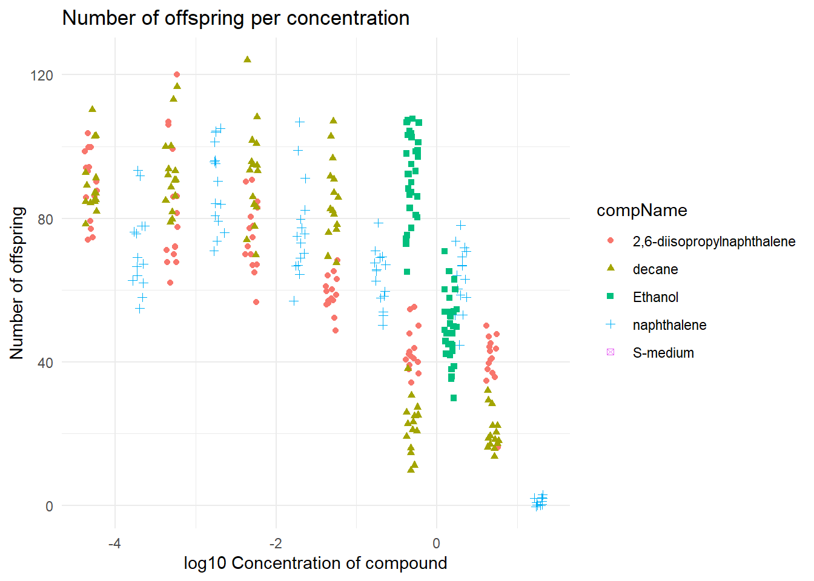

5 Example Data Analysis
To show my skills working with basic datasets I have imported data from a C. elegans experiment and have made a few graphs based on this data.
First thing is loading in some needed libraries en the data itself
library(readxl)
library(tidyverse)
library(here)After I imported the data I looked at which classes where assigned to the variables. Most variables where imported correctly. compConcentration was imported as a character but it was a number. So I changed the class to numeric using the following command.
I also plotted some data using ggplot.
#compConcentration in numeric veranderen
data$compConcentration <- as.numeric(data$compConcentration)
#grafiek maken
ggplot(data = data, aes(x = compConcentration, y = RawData)) +
geom_point(aes(color = compName,
shape = compName))+
labs(title = "Number of offspring per concentration",
y = "Number of offspring",
x = "Concentration of compound") +
theme_minimal() Because I changed to compConcentration variable to numeric the x-axis data is readable, otherwise it would have been impossible to read because there would be a lot of text clutter on the x-axis.
Because I changed to compConcentration variable to numeric the x-axis data is readable, otherwise it would have been impossible to read because there would be a lot of text clutter on the x-axis.
But the data is still not easy to look at, because of this I have normalized the data in the following command with a log10 transformation. I also added some geom_jitter to make sure that the data does not overlap.
#compConcentration in numeric veranderen
data$compConcentration <- as.numeric(data$compConcentration)
#grafiek maken
ggplot(data = data, aes(x = log10(compConcentration), y = RawData)) +
geom_jitter(aes(color = compName, shape = compName),width = 0.08)+
labs(title = "Number of offspring per concentration",
y = "Number of offspring",
x = "log10 Concentration of compound") +
theme_minimal()
The positive control for this experiments is Ethanol. The negative control for this experiment is S-medium.
For a statistical analysis to find out the if there is indeed a difference. I would:
Do a shapiro-wilk test to see if the data has a normal distribution.
Next I would do a levene test to see if there is any variance within the data.
If the data has a normal distribution I would do a T-test to see if there is any significant difference. The T-test would use the positive control group and another substance.
In the last plot I normalised the data with the help of a the mean of the negative control. This is useful because now the negative control has no effect on the data itself.
#data filteren op de negatieve controle
data_negative <- data %>% filter(data$expType == "controlNegative")
#De gemiddelde berekenen van het rawdata colom van de negative controle
mean_negative <- mean(data_negative$RawData, na.rm = TRUE)
#De data normaliseren op basis van het gemiddelde van de negatieve controle
data$RawData <- (data$RawData/mean_negative)*100
#grafiek maken
ggplot(data = data, aes(x = log10(compConcentration), y = RawData)) +
geom_jitter(aes(color = compName, shape = compName),width = 0.08)+
labs(title = "Number of offspring per concentration Normalised",
y = "Number of offspring",
x = "log10 Concentration of compound") +
theme_minimal()